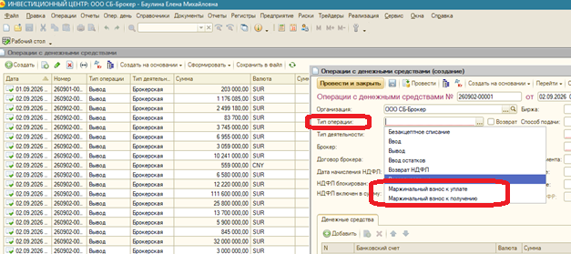
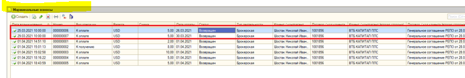
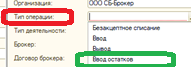
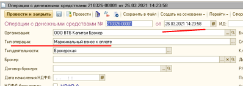
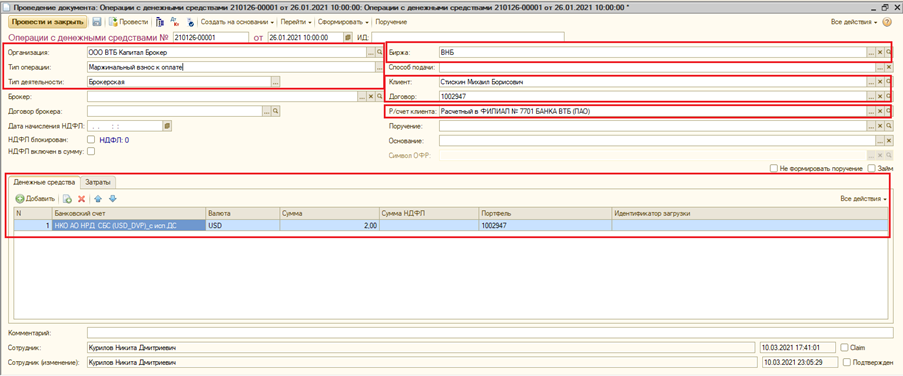

| Статус | Аналитика. Номера новой задачи Jira нет. Историческая ссылка: ACCOUNTING-6645 (2021). |
| База | SBB_Broker (1С ИЦ, бэк-офис брокера). На форме в письме: «ИНВЕСТИЦИОННЫЙ ЦЕНТР: ООО СБ-Брокер», пользователь Баулина Елена Михайловна. |
| Источник | Письмо 02.09.2026 13:56 и постановка ACCOUNTING-6645 (выгрузка Confluence 02.09.2026 14:21). Оригиналы: Документация/ОРИГИНАЛ/ |
| Кому | Савельев М.; 1S_servicedesk; 1C_Development. Копия: Зверев А.; Backoffice. |
| Объекты | Документ.ОперацииДС, Перечисление.ТипыОпераций, Документ.МаржинальныйВзнос, Перечисление.ВидыМаржинальныхВзносов |
| Аудитория | Аналитик SBB / разработка 1С ИЦ: понять претензию, не удалять значения перечисления, ответить по «Ввод остатков», согласовать скрытие типов МВ в интерфейсе. |
1. Что просят
Дальше позиция уточняется по ходу переписки:
- В плане ЮАТ был отдельный документ «Маржинальные взносы», а не новые типы неторговых операций с ДС.
- После ответа, что удалять из системы нельзя, запрос меняется: убрать МВ из доступа и визуализации.
- Параллельно остается открытый вопрос: что такое тип «Ввод остатков» и как он отражается в ВУ, брокерском отчете и регуляторной отчетности.
ОперацииДС — не дубль журнала «Маржинальные взносы» и не самовольное изменение ПРОД.
В БТ ACCOUNTING-6645 прямо сказано: при проведении документа «Маржинальный взнос» автоматически создается
связанная Операция с ДС с новым типом «Маржинальный взнос к оплате» или «Маржинальный взнос к получению».
Отдельный документ (как в плане ЮАТ у Баулиной) и новые типы (как у Савельева, п.18) в постановке идут вместе.
Удалять значения перечисления нельзя. Скрытие ручного выбора на форме ближе к последней просьбе Баулиной:
в сценарии 6645 Операция с ДС создается автоматически, не выбирается пользователем из списка.
2. Переписка 02.09.2026
Ниже — хронологический порядок (в исходном .msg письма идут от последнего к первому). Текст сохранен по смыслу, орфография авторов не правилась.
Коллеги ИТ, добрый день,
Что это на новые НЕПРАВИЛЬНЫЕ типы операций с ДС???
Просьба срочно их удалить из ПРОД базы!
И просьба не допускать внесения неправильных / несогласованных / не подтвержденных изменений в ПРОД базу 1С ИЦ.
Это очень неправильно и несет риски, включая регуляторные!

Добрый день
Внедрили в 21 году
Максим, ни в приложенном плане ЮАТ, ни ранее не было таких типов НЕТОРГОВЫХ документов Операции с ДС.
Из Плана ЮАТ — новый отдельный документ Маржинальные взносы, а не новый Тип Операции с ДС:

Пожалуйста удалите эти неправильные типы неторговых операций с ДС — таких не может быть…
И можно попросить пожалуйста проверить что и для чего этот Тип Операции с ДС — Ввод остатков?

В плане тестирования п.18
Там видно новый тип операции

нельзя ни чего удалять из системы! Возможны риски что то сломать!
Ввод остатков — используется для ввода остатков
Максим,
По МВ — а можно их убрать из доступа и визуализации?
По вводу остатков — непонятен ответ. Открытый вопрос тот же — что это и для чего используется этот Тип Операции с ДС — Ввод остатков? (в т.ч.: каких остатков, на основании чего и каким образом формируется и исполняется, как отражается в записях ВУ, брок.отчете, рег.отчетности)?
3. Постановка ACCOUNTING-6645
Читаемая копия: accounting6645_confluence.html.
Оригинал выгрузки Confluence (скачан как .doc, внутри MHTML) — в Документация/ОРИГИНАЛ/.
Связанные задачи на той же странице: ACCOUNTING-6646, 6647 (автопроведение Операции с ДС вместо ручного шага 6), 6649 (комментарий).
| Что видит заказчик сейчас | Что было в постановке 2021 |
|---|---|
| В списке типа «Операции с ДС» видны МВ к уплате / к получению — «таких не может быть, в ЮАТ был отдельный документ» | Отдельный документ «Маржинальный взнос» (журнал, вид «К оплате» / «К получению») плюс автосоздание связанной Операции с ДС с новыми типами |
| Савельев: «в плане тестирования п.18 виден новый тип операции» | В постановке есть пример документа 210126-00001, тип «Маржинальный взнос к оплате» — тот же объект, что на скриншоте Савельева 26.03.2021 |
| Баулина: убрать из доступа и визуализации | В сценарии Операция с ДС создается автоматически (шаг 4), проводится бэк-офисом (шаг 6). Ручной выбор типа из выпадающего списка постановка не описывает |

4. Как устроено в конфигурации
Первый проход по исходникам SBB_Broker (WORK), без проверки данных ПРОД.
Перечисление ТипыОпераций
Одно общее перечисление на несколько документов (в том числе ОперацииДС и ОперацииЦБ). Восемь значений:
| Имя | Синоним | На форме ОперацииДС в письме |
|---|---|---|
БезакцептноеСписание | Безакцептное списание | есть |
Ввод | Ввод | есть |
Вывод | Вывод | есть |
ВводОстатков | Ввод остатков | есть, вопрос Баулиной |
ВозвратНДФЛ | Возврат НДФЛ | есть |
Резервирование | Резервирование | на скриншоте 04 обрезано / ниже по списку |
МаржинальныйВзносКОплате | Маржинальный взнос к уплате | обведен, претензия |
МаржинальныйВзносКПолучению | Маржинальный взнос к получению | обведен, претензия |
Комментарий к документу ОперацииДС в метаданных: «Ввод ДС / Вывод ДС / Перевод ДС / Ввод остатков ДС». Типы МВ в комментарий не внесены.
Два разных объекта, не один
| Объект | Синоним | Роль |
|---|---|---|
Документ.МаржинальныйВзнос |
Маржинальный взнос (в письме журнал «Маржинальные взносы») | Отдельный документ. Вид операции — Перечисление.ВидыМаржинальныхВзносов: «К оплате» / «К получению». Это то, на что указывает Баулина как на правильный объект из плана ЮАТ. |
Документ.ОперацииДС |
Операции с денежными средствами | Неторговые операции с ДС. При заполнении на основании МаржинальныйВзнос подставляется тип МаржинальныйВзносКОплате или МаржинальныйВзносКПолучению. |
ОбработкаЗаполнения (Документ.ОперацииДС):
Если основание = Документ.МаржинальныйВзнос Тогда
Если ВидОперации = ВидыМаржинальныхВзносов.КОплате
ТипОперации = ТипыОпераций.МаржинальныйВзносКОплате
Если ВидОперации = ВидыМаржинальныхВзносов.КПолучению
ТипОперации = ТипыОпераций.МаржинальныйВзносКПолучению
То есть спорные типы в «Операции с ДС» — это оплата / получение маржинального взноса, а не замена документа «Маржинальный взнос». На скриншоте Савельева как раз такой документ: 26.03.2021, «Маржинальный взнос к оплате». На скриншоте Баулиной журнал МВ за те же даты марта 2021.
Почему типы видны вручную
На форме документа ОперацииДС.ФормаДокумента поле ТипОперации — обычное поле ввода без ПараметрыВыбора и без отбора списка. Пользователь видит все значения перечисления, включая служебные и расчетные.
Движения по типу
Функция ВидДвиженияПоТипуОперации в модуле объекта ОперацииДС:
| Тип | Вид движения |
|---|---|
| Ввод, МаржинальныйВзносКПолучению, ВозвратНДФЛ, ВводОстатков | Приход |
| Вывод, МаржинальныйВзносКОплате, БезакцептноеСписание, Резервирование | Расход |
Если тип неизвестен — исключение «Невозможно определить вид движения по типу операции».
5. Ответ: Ввод остатков
Письмо заказчику: Ввод остатков.html. Ниже — разбор по коду. Данные ПРОД не снимались.
Чего этот тип не делает
| Сценарий «Ввод» | «Ввод остатков» |
|---|---|
| Заполнение из поручения клиента, вид операции «Ввод» | Из поручения не создается. Вида операции поручения «Ввод остатков» нет |
| При проведении поручение клиента для типа «Ввод» не создается (оно уже основание) | Исключение только для типа «Ввод». Если не стоит «не формировать поручение», система создаст поручение с видом Вывод — это ловушка, не сценарий остатков |
| Проверка соответствия портфеля бирже (Т0/Т2, FORTS, валютный) | Не выполняется |
| Движения по РН ДенежныеСредстваПоРублевымСБС (физлицо, рублевый СБС, MICEX/SELT/FORTS) | Не пишутся |
| Валютный контроль, страница доп. информации на форме | Нет. Сообщение: контроль только для ввода и вывода |
| Признак дилерского займа по тегу в назначении | Нет (только Ввод/Вывод и тип деятельности ДУ) |
Что делает при проведении ОперацииДС
- Приход по регистрам
ДенежныеСредстваБ/ У / Д (суффикс по типу деятельности), плюс плановая позиция от этих движений. - Нет движений «ДС в пути» (они у оплаты МВ), нет начисления НДФЛ (оно у вывода), нет возврата НДФЛ.
Операции с ЦБ
Комментарий метаданных: «Ввод остатков ЦБ». Функция ЭтоПоступление считает тип поступлением наравне с «Ввод»: приход количества ЦБ. Партийный контур и НДФЛ-сведения о расходах в текущем коде завязаны в основном на тип Ввод, не на «Ввод остатков». При этом расчет НДФЛ (НачислениеНДФЛ, РасчетНалогаДрафт, инвествычет) уже умеет партию с Партия.ТипОперации = ВводОстатков как покупку / ввод — рядом с Документ.ПартияВводаЦБ. Значит, такие документы исторически использовались как входящие партии.
ACCOUNTING-7197 не про этот тип
Процедура СоздатьВводОстатковПоДСРублевыхСБС создает Документ.КорректировкаРегистров с комментарием «ACCOUNTING-7197: ввод остатков ДС рублевых СБС» и движениями по ДенежныеСредстваПоРублевымСБС. Из «Операции с ДС» туда отбирается только тип Ввод. Путать с типом на форме нельзя.
Брокерский отчет и регуляторка
ОтчетКлиентаNewберет регистраторыОперацииДСпо оборотам ДС без отбора типа. Имя: синоним перечисления; английский — «Input of balances».- Отдельного фильтра «Ввод остатков» в формах регуляторной отчетности нет. Влияние только через остаток регистра, если документ проведен.
6. Открытые вопросы
1 МВ в интерфейсе. Согласовать с Баулиной скрытие типов «Маржинальный взнос к уплате / к получению» в форме создания «Операции с ДС» (и в списке, если мешает), без удаления значений перечисления. По постановке 6645 эти документы создает проведение МВ, не ручной выбор типа.
2 ACCOUNTING-6645 закрыта по тексту Confluence. Осталось: карточка Jira, план ЮАТ/тестирования п.18 целиком, статус 6647 (должно ли проведение Операции с ДС остаться ручным).
3 Данные ПРОД / SBB_RE. Сколько проведенных ОперацииДС и ОперацииЦБ с типом «Ввод остатков» и с типами МВ. Есть ли документы МВ без связанной операции с ДС и наоборот.
4 Ввод остатков по конфигурации закрыт. Ответ заказчику: Ввод остатков.html. Осталось подтвердить фактом по базе, есть ли такие документы на ПРОД.
5 Права / скрытие. Вместе с МВ можно убрать «Ввод остатков» из выбора на форме. RLS сейчас поле не фильтрует.
7. Что нельзя делать
- Не править базовую конфигурацию в этом проекте до согласованного решения.
- Не обещать заказчику «удалили из ПРОД», если речь только о скрытии в форме.
- Не смешивать в ответе документ
МаржинальныйВзноси тип операцииОперацииДС— это разные объекты.
ОперацииДС
(и при необходимости права), чтобы вручную нельзя было выбрать типы МВ.
Проведение существующих документов и ввод на основании МаржинальныйВзнос сохранить.
8. Следующие шаги анализа
- Постановка 6645 и ответ по «Ввод остатков» уже в каталоге.
- Запросом по ПРОД (или копии SBB_RE) посчитать документы
ОперацииДС/ОперацииЦБс типом «Ввод остатков» и с типами МВ. - Согласовать скрытие типов МВ (и при желании «Ввод остатков») на форме, без удаления перечисления.